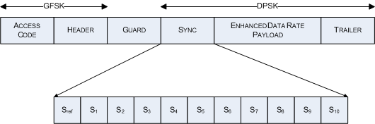

The I/Q diagrams show the constellation points (or vector diagrams) for the DPSK modulated portion of the EDR bursts. The diagrams start from the Sref symbol in the EDR synchronization sequence (shown in the following figure).

To acquire the I/Q vectors, the R&S CMW divides the DPSK portion of the burst in adjacent blocks of 50 symbols. Each block is compensated for its individual carrier frequency and timing offset. The first block starts from symbol S1 in the EDR synchronization sequence. The last symbol in each block provides the phase reference that is necessary to demodulate the (differentially modulated) symbols in the next block. The Sref symbol is used as a reference for the first block.
The I/Q values can be displayed in three different diagram types; see "Measurement Diagrams (EDR)".
The absolute I/Q diagram shows the normalized I/Q vectors starting from Sref symbol. The diagrams contain 50*N + 1 consecutive symbols. Normalization means that the average magnitude of all I/Q vectors equals to 1. N is the number of blocks processed within a packet. This value depends on packet type and number of payload bytes ("Payload Length"). For 2-DHx and 3-DHx packets, it is calculated according to Table "Symbol blocks for EDR modulation analysis".
The differential I/Q diagram shows the normalized I/Q amplitude of each symbol and the phase difference compared to the previous symbol:
Last symbol = a · e j·⍺, current symbol = b · e j·β
⇒ Differential symbol = r · e j·ϕ with r = b, ϕ = β – ⍺
The Sref symbol provides the initial phase reference; the diagrams contain 50*N symbol points.
This diagram shows the differential error vector calculated according to Bluetooth radio specification; see also "DEVM Calculation". This diagram contains 50*N symbol points.
I/Q symbols are displayed for EDR Bluetooth bursts only. I/Q symbols are not displayed for the following EDR Bluetooth bursts:
Symbols from fractional blocks at the end of the burst are not displayed. |